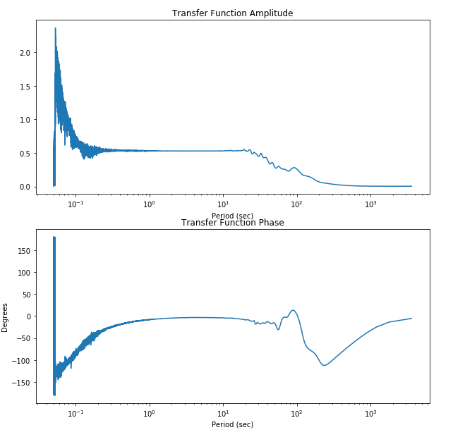

pycheron.psd.crossSpectrum¶
-
crossSpectrum(x, y, fs, spans=None, taper=0.1, pad=0, demean=False, detrend=True, logger=None)[source]¶ CrossSpectrum is a function specifically for calculating cross-spectral values between two time series.
Parameters: - x (obspy.core.trace.Trace) – Time series trace objecy
- y (obspy.core.trace.Trace) – Time series trace object
- fs (int) – Sampling frequency of the x and y time series
- spans (numpy.ndarray) – Array of odd integers that provide widths of modified Daniell smoothers to be used to smooth the periodogram (i.e. np.array([3,5]) <- default span provided in transferFunctionMetric)
- taper (float) – Specifies the proportion of data to taper. A split cosine bell taper is applied to this proportion of the data at the beginning and end of the series. Percentage in decimal format (i.e. .1 = 10%)
- pad (int) – Proportion of data to pad. Zeros are added to the end of the series to increase its length by the proportion pad
- demean (bool) – If True, subtract the mean of the series (DEFAULT = False)
- detrend (bool) – If True, remove a linear trend from the series. (Default = True). Linear will also demean.
- logger (pycheron.util.logger.Logger) – Logger object
Returns: Returns the following parameters and types:
- freq (numpy.ndarray) - spectral frequencies
- spec1 (numpy.ndarray) - ‘two-sided’ spectral amplitudes for x (real-valued only)
- spec2 (numpy.ndarray) - ‘two-sided’ spectral amplitudes for y (real-valued only)
- coh (numpy.ndarray)- magnitude squared coherence between x and y
- phase (numpy.ndarray) - cross-spectral phase between x and y
- Pxx (numpy.ndarray) - periodogram for x
- Pyy (numpy.ndarray) - periodogram for y
- Pxy (numpy.ndarray) - cross-periodogram for x & y
Note
This function marries functionality from R’s spec.pgram [1] [2] [3] with MATLAB’s pwelch [4]. Other features mimic the code in Octave’s pwelch() function [5].
Example
# Import function from pycheron.psd.crossSpectrum import crossSpectrum from math import pi import matplotlib.pyplot as plt # Initialize IRIS client client = Client("IRIS") #Define start/end times starttime = UTCDateTime("2011-05-01T00:00:00.000") endtime = starttime + 3600 # Grab data from IRIS web client server with specified starttime/endtime and SNCL st1 = client.get_waveforms("CI","PASC","00","BHZ", starttime,endtime) st2 = client.get_waveforms("CI","PASC","10","BHZ", starttime, endtime) # Grab out traces tr1 = st1[0] tr2 = st2[0] sampling_rate = int(round(tr1.stats.sampling_rate)) # Calculate the cross spectrum freq, spec1, spec2, coh, phase, pxx, pyy, pxy = crossSpectrum(tr1, tr2, sampling_rate, spans=np.array([3,5,7,9]), taper=.1, pad=0, demean=False, detrend=True) # Calculate the transfer function transferFunction = pxy/pxx transferAmp = abs(transferFunction) transferPhase = phase * 180 /pi
Plotting
# Plot transfer function amplitude and phase from above example fig = plt.figure(figsize=(10,10)) ax1 = fig.add_subplot(211) ax1.semilogx(1/freq,transferAmp) ax1.set_title('Transfer Function Amplitude') ax1.set_xlabel('Period (sec)') ax2 = fig.add_subplot(212) ax2.semilogx(1/freq,transferPhase) ax2.set_title('Transfer Function Phase') ax2.set_xlabel('Period (sec)') ax2.set_ylabel('Degrees')
References
[1] https://www.rdocumentation.org/packages/stats/versions/3.6.1/topics/spectrum [2] https://cran.r-project.org/web/packages/psd/vignettes/normalization.pdf [3] http://www.ltrr.arizona.edu/~dmeko/notes_6.pdf [4] https://www.mathworks.com/help/signal/ref/pwelch.html [5] http://octave-signal.sourcearchive.com/documentation/1.0.7/pwelch_8m-source.html [6] http://terascan.smast.umassd.edu/nasdata/archive/achaudhu.old/docs/TIMESERIES/notes_6.pdf